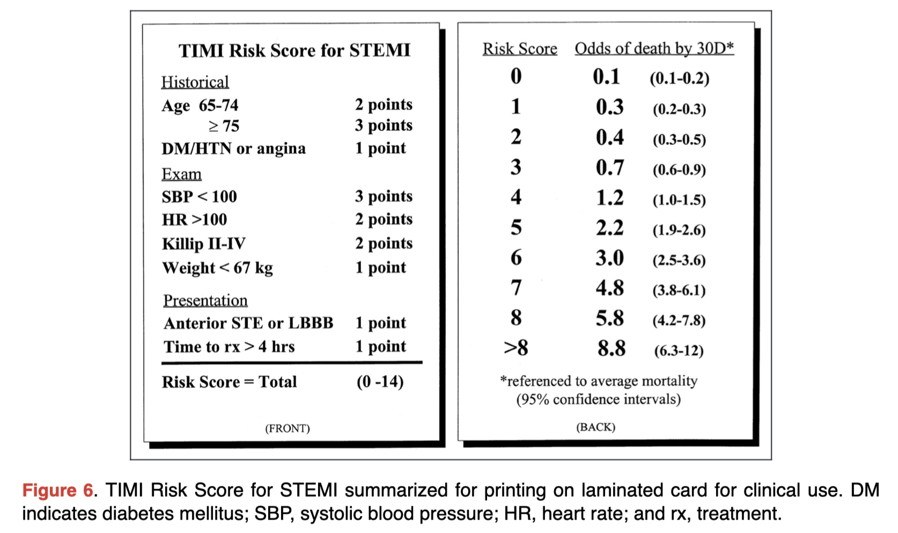
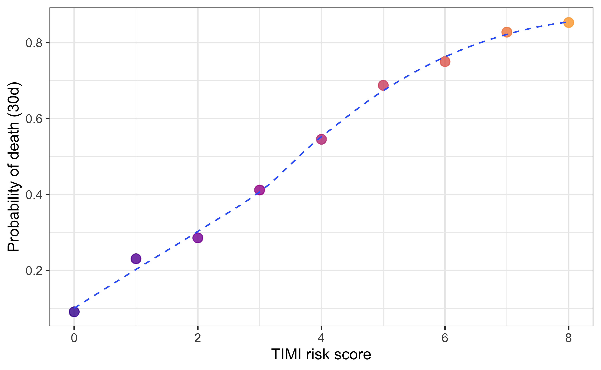

Code
library(tidyverse)
theme_set(theme_bw())A Simple Calculator
Kittipos Sirivongrungson
2022-05-03
Today, I build a simple program to calculate TIMI Risk Score for STEMI [1] using R code.
The calculator will simply base on this table chart.

Design motivation came from a TIMI Risk Score for STEMI from mdcalc.
TIMI_calc()Function’s Parameter
Historical
age: (int) Age in yearsDM: (lgl) Any DM ?HTN: (lgl) Any HTN ?angina: (lgl) Any angina ?Exam
SBP: (dbl) Systolic Blood Pressure (mmHg)HR: (dbl) Heart Rate (bpm)Killip: (lgl) Killip Class form 1 - 4wt: (dbl) Weight in kgPresentation
Ant_STE: (lgl) Anterior STE ?LBBB: (lgl) LBBB ?time_to_rx: (dbl) time to treatment (hr)Return value: A data frame with 3 columns:
risk.score: TIMI risk scoreodds.death.30d: estimated odds of death by 30 day.p.death.30d: estimated probability of death by 30 day.Since the original table reports as odds not a probability of death by 30 day. We need to write a function to convert odds to probability.
Odds of death is a ratio of the probability of death to the probability of survival; we can write the Equation 1 (\(p\) denotes the probability of death).
\[ odd = \frac{p}{1-p} \qquad(1)\]
Rearranging terms \(p\) to the left, we get:
\[ p = \frac{odd}{odd + 1} \]
Therefore we can write function odds_to_prob().
risk_df is a lookup table that maps risk score to the odds and probability of death.
| risk.score | odds.death.30d | p.death.30d |
|---|---|---|
| 0 | 0.1 | 0.0909091 |
| 1 | 0.3 | 0.2307692 |
| 2 | 0.4 | 0.2857143 |
| 3 | 0.7 | 0.4117647 |
| 4 | 1.2 | 0.5454545 |
| 5 | 2.2 | 0.6875000 |
| 6 | 3.0 | 0.7500000 |
| 7 | 4.8 | 0.8275862 |
| 8 | 5.8 | 0.8529412 |
risk_df %>%
ggplot(aes(risk.score, p.death.30d, color = risk.score)) +
geom_point(alpha = 0.8, size = 3, show.legend = F) +
geom_smooth(se = FALSE, size = 0.5, lty = "dashed", show.legend = F) +
scale_color_viridis_c(option = "plasma",
begin = 0.1,end = 0.8) +
labs(x = "TIMI risk score", y = "Probability of death (30d)")
Keep in mind that if risk score is > 8, the odds of death by 30 day would be 8.8 but this would be impossible to include in the data frame.
First, let’s start building get_TIMI_score() to calculate TIMI risk score.
The return value will be a list with:
total_score: (int) a total risk score (range 0-14)score: a list containing individual score for each fields.Note that I use ifelse() because it vectorized over the inputs.
get_TIMI_score <- function(age, DM, HTN, angina,
SBP, HR, Killip, wt,
Ant_STE, LBBB, time_to_rx
) {
score <- list() # Initialize empty list to store score
# Age ≥ 75 = 3 score, Age 65-75 = 2 score
score$age <- ifelse(age >= 75, 3L, ifelse(age >= 65, 2L, 0L))
# Any DM, HT, or angina give 1 score
score$DM_HT_angina <- ifelse(DM | HTN | angina, 1L, 0L)
# SBP < 100 give 3 score
score$SBP <- ifelse(SBP < 100, 3L, 0L)
# HR > 100 give 2 score
score$HR <- ifelse(HR > 100, 2L, 0L)
# Killip II-IV give 2 score
score$Killip <- ifelse(Killip %in% 2L:4L, 2L, 0L)
# Weight < 67 kg give 1 score
score$wt <- ifelse(wt < 67, 1L, 0L)
# Anterior STE or LBBB give 1 score
score$Ant_STE_LBBB <- ifelse(Ant_STE | LBBB, 1L, 0L)
# Time of rx > 4 hr give 1 score
score$time_to_rx <- ifelse(time_to_rx > 4, 1L, 0L)
## Sum Scores
total_score <- as.integer(colSums(t(as.data.frame(score))))
list(total_score = total_score,
score = score)
}Test getting TIMI score from input of 1 patient
Now the final function TIMI_calc() will calculate TIMI risk score, odds and probability of death by 30 days.
The return value will be a data frame.
TIMI_calc <- function(age, DM, HTN, angina,
SBP, HR, Killip, wt,
Ant_STE, LBBB, time_to_rx
) {
score <- get_TIMI_score(age = age, DM = DM, HTN = HTN,
angina = angina, SBP = SBP,
HR = HR, Killip = Killip,
wt = wt, Ant_STE = Ant_STE,
LBBB = LBBB, time_to_rx = time_to_rx)
total_score <- score$total_score
# If the risk score > 8, odds is 8.8. If not, find odds from `risk_df`
odds.death.30d <- ifelse(total_score > 8, 8.8, {
# Odds from Lookup Table
risk_df[total_score + 1, ]$odds.death.30d
})
# Combind to Data Frame
data.frame(
risk.score = total_score,
odds.death.30d = odds.death.30d,
p.death.30d = odds_to_prob(odds.death.30d)
)
}Let’s try TIMI_calc(), I have designed it to be a vectorized function.
Therefore, we can input arguments as vector of length > 1.
Let’s say I have a patients data frame (simulated), which contains a collection of history, physical exams, and other presentation from, keeping it simple, 3 patients.
| name | age | underlying | angina | SBP | HR | Killip | wt | EKG | time_to_rx |
|---|---|---|---|---|---|---|---|---|---|
| John | 50 | None | TRUE | 120 | 70 | 0 | 70 | Anterior STE | 2 |
| Dave | 70 | DM | FALSE | 100 | 80 | 1 | 80 | Inferior STE | 3 |
| Marty | 80 | DM, HT | TRUE | 90 | 100 | 2 | 65 | Inferior STE, LBBB | 4 |
Next, I will use TIMI_calc() on these data. But first, I will use some trick to convert patients into a cleaner data frame patients_args that can be passed as arguments directly.
patients_args <- patients %>%
# Extract DM, HT to logical
mutate(
DM = str_detect(underlying, "DM"),
HTN = str_detect(underlying, "HTN"), .after = underlying
) %>%
# Extract Ant_STE, LBBB to logical
mutate(
Ant_STE = str_detect(EKG, "Anterior STE"),
LBBB = str_detect(EKG, "LBBB"), .after = EKG
) %>%
select(-name, -underlying, -EKG)Now I use non-standard evaluation trick from {rlang} to unquote splice patients_args and passed as argument.
| risk.score | odds.death.30d | p.death.30d |
|---|---|---|
| 2 | 0.4 | 0.2857143 |
| 3 | 0.7 | 0.4117647 |
| 11 | 8.8 | 0.8979592 |
Finally, I will bind the result into one data frame to keep track of other patient’s information.
| name | risk.score | odds.death.30d | p.death.30d | age | underlying | angina | SBP | HR | Killip | wt | EKG | time_to_rx |
|---|---|---|---|---|---|---|---|---|---|---|---|---|
| John | 2 | 0.4 | 0.2857143 | 50 | None | TRUE | 120 | 70 | 0 | 70 | Anterior STE | 2 |
| Dave | 3 | 0.7 | 0.4117647 | 70 | DM | FALSE | 100 | 80 | 1 | 80 | Inferior STE | 3 |
| Marty | 11 | 8.8 | 0.8979592 | 80 | DM, HT | TRUE | 90 | 100 | 2 | 65 | Inferior STE, LBBB | 4 |
I hope this example could give you an idea to design and program your own calculator to solve problems that you’re facing someday.
That’s all !